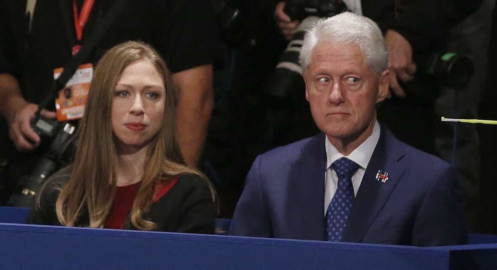
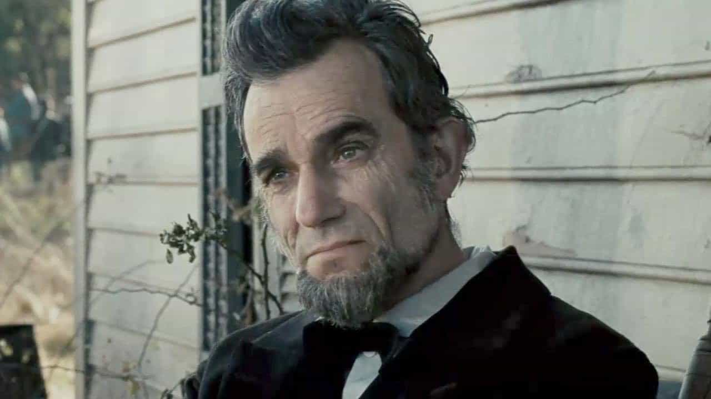
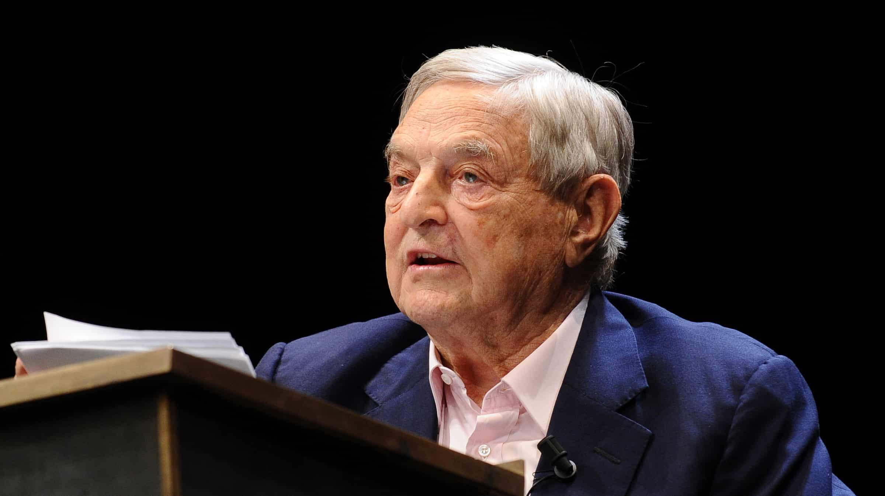
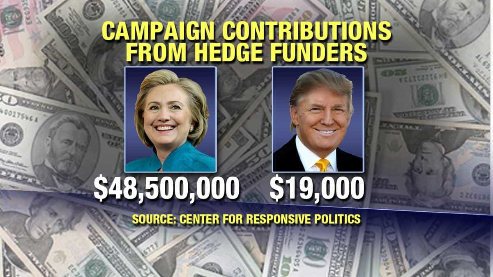
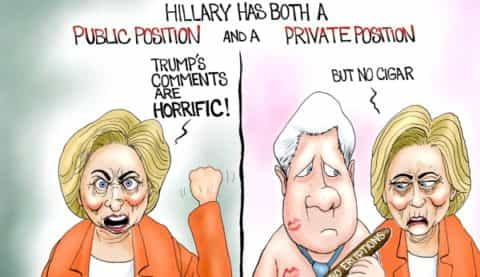

< < < Back
Donald Trump Indisputably Destroys Hillary Clinton In The Second Presidential Debate – Return Of Kings
The second Presidential debate at Washington University in St. Louis has delivered a remarkable victory to Donald Trump. After his toughest week on the campaign trail yet, following grossly unsubstantiated claims that he sexually abused women, Trump piled on Hillary Clinton with a vengeance. Everything, from her email scandal to her husband’s history with women, was turned against her in dramatic fashion on Sunday night. Not even the biased intercessions of the two moderators, CNN’s Anderson Cooper and ABC’s Martha Raddatz, could save the former Secretary of State.
Starts at 32:00
Let’s face it: many Donald Trump supporters found his first debate performance at Hofstra University two weeks ago underwhelming. I for one was one of those who felt Trump beat Clinton even then, but many others were not convinced. Last night, however, the outcome was clear. Trump hammered Clinton where it mattered and numerous times she was left reeling from his words.
Below you will find some of the truth bombs over which Hillary Clinton will be having nightmares for weeks to come.
Trump promised to get a special prosecutor to investigate Clinton’s email scandals
Donald Trump was brutally focused in his castigation of Hillary Clinton’s deleted emails scandal. Homing in on Clinton’s deletion of emails after she had been subpoenaed, Trump pointed out that anyone doing a fifth of what she had done would already be in jail. To that end, he promised to appoint a special prosecutor to investigate Clinton’s misdeeds and the bizarre scenario involving a plane meeting between her husband Bill Clinton and US Attorney-General Loretta Lynch, who was the person most responsible for overseeing the investigation. Trump also highlighted reports that many FBI officials are bemoaning the leniency shown to Clinton.
Media commentary after the debate attacked Trump for supposedly being authoritarian in promising to put Hillary Clinton in jail. This is way off the mark, as Presidential administrations regularly go after people for “illegal” activities, well before a court has pronounced judgment. For example, under Barack Obama’s authority, the US Federal Government is suing Trump supporter Peter Thiel’s technology company, Palantir, for what it says is certain “racial discrimination.” Bear in mind that only weeks ago Thiel was fronting the Republican National Convention to support Trump. How convenient!
Hillary was unable to push the “Trump hates women” agenda fully because…

Yup, it’s due to the guy on the right.
Naturally, Hillary Clinton sought to attack Donald Trump for eleven-year-old video footage of him that was only publicized days ago. The footage featured the Republican nominee making remarks about women, which the Trump campaign described as mere locker room banter and liberals attacked as “misogyny” and “proof” of sexual assault. Nonetheless, the Democratic nominee’s criticisms fell far short of what many had expected.
The presence at Washington University of both Hillary’s husband Bill and a series of women who had accused the former President of rape, sexual assault, and general sexual impropriety definitely restricted what she could say about the Trump video. Better yet, Trump strengthened his position by reiterating the inappropriateness of what was said in 2005 but also categorically denying that he had ever sexually assaulted women. The Clinton campaign is so used to Trump not saying that he’s wrong that it had no back-up plan for the very deft response he gave to his critics last night.
“Revelations” about Trump this week, orchestrated by CNN to perfectly time with the upcoming debate, were meant to destroy the businessman’s campaign. By contrast, they have actually highlight the fragility of Hillary’s. As someone who has said previously that women need to be believed whenever they allege sexual assault or rape, she knows she will do herself no favors by pressing too hard against Trump on women. This is, after all, the same former First Lady who tried to destroy her husband’s accusers, women who have for years refused to recant their chilling claims. It’s a very messy situation for Hillary indeed.
Bill Clinton’s face, one that has given us many moments throughout the Presidential race so far, was especially classic on Sunday evening. NBC’s focus on him as he was being mentioned by Trump regarding sexual abuse is a camera shot countless people will remember for a very, very long time.
Hillary’s “you need a public and a private position” comment was blamed on Steven Spielberg’s Lincoln

Apparently Hillary’s line only related to applying pressure on Congress. Do you really believe that?
The most surreal moment of the debate was when Hillary Clinton blamed her “you need a public and a private position” comment on the Steven Spielberg film Lincoln. After Wikileaks recently released partial transcripts of her speeches to Wall Street, including to Goldman Sachs, quick attention in particular was paid to this remark. In one moment during the debate that would have dragged on excruciatingly for any Democrat watching, Hillary said that this quote was really just praise for the strategies used by Abraham Lincoln to manage Congress and pass the Thirteenth Amendment, as depicted in Lincoln.
Though Trump could have better linked this poor rationalization by Clinton to her flip-flopping on the Trans-Pacific Partnership, an issue where she has multiple times argued for “open borders,” he did enough to greatly unsettle her. So much so that she needed to divert with “But let’s talk about what’s really going on here…” What followed was yet another rehash of her Russian conspiracy theory, whereby Clinton’s long-term, documented duplicity on the issues should be ignored in favor of looking into a not just murky but opaque purported master-plan by Vladimir Putin to help Donald Trump win the November general election.
On this note, Trump delivered his equal best line (alongside “Because you’d be in jail”) of the night:
Hillary had no answer to Trump’s tax retort

George Soros not only uses legal tax provisions, like Trump – he “broke” the Bank of England in 1992 through his currency speculations, too.
Unsurprisingly, Hillary Clinton went after Donald Trump over allegations he reported a nearly one billion dollar loss in the 1990s to “avoid” paying federal income taxes. Putting the undeniable legality of his actions twenty years ago to the side, Trump retorted in a fashion his opponent did not expect, asking why he should be attacked for legitimately using laws exploited by Hillary’s own top donors. As an illustration, Warren Buffett and George Soros, both major Trump haters, are believed to have similarly saved huge, if not greater amounts of cash from the coffers of the taxman.
Strangely as well, Clinton said if elected President she would root out the presence of “dark, unaccountable money” in politics. But where would that leave Soros and her other financial lifelines? Hedge fund operators and other corporations, legal entities whose motivations are very hard to trace, let alone control, have backed Clinton over Trump to an unprecedented extent so far, with the present disparity only due to widen further:

Moreover, what is most lost on Hillary and her supporters is that Trump’s resurrection from near financial ruin in the 1990s is the perfect microcosm of what America needs. With $20 trillion in debt, the United States requires a massive reversal to arrest its decline as a world superpower. Trump’s own experiences demonstrate that he can perform this Lazarus-like transformation far better than Clinton, whose main source of income is delivering “speeches.”
Prepare for the typical leftist counterattack via more “dirt”-digging against Trump

Image courtesy of Branco, www.comicallyincorrect.com
Just as my colleague Michael Sebastian explored the other day, Donald Trump is being targeted and vilified for being a heterosexual male and proud American unafraid to challenge the status quo. Powerful interests are at work to discredit him with heinous, patently false allegations. Trump’s schooling of Hillary on Sunday night will have only inflamed their hatred of him and their pathological desire to see his fall.
So much work is yet to be done. Hillary’s hounds in the media will be out again trying to unseat him from his perch. Traitorous Republicans, like the dozens who abandoned him after his harmless remarks from over a decade ago were released, will even go so far as to fuel the flames against Trump for Hillary and the Democrats.
The second debate was a triumph for Trump, but one that he (and we, too) cannot rest on.
Read More: Hillary Clinton Pulls Out The Lie Book To Try And Stump The Trump At The First Presidential Debate